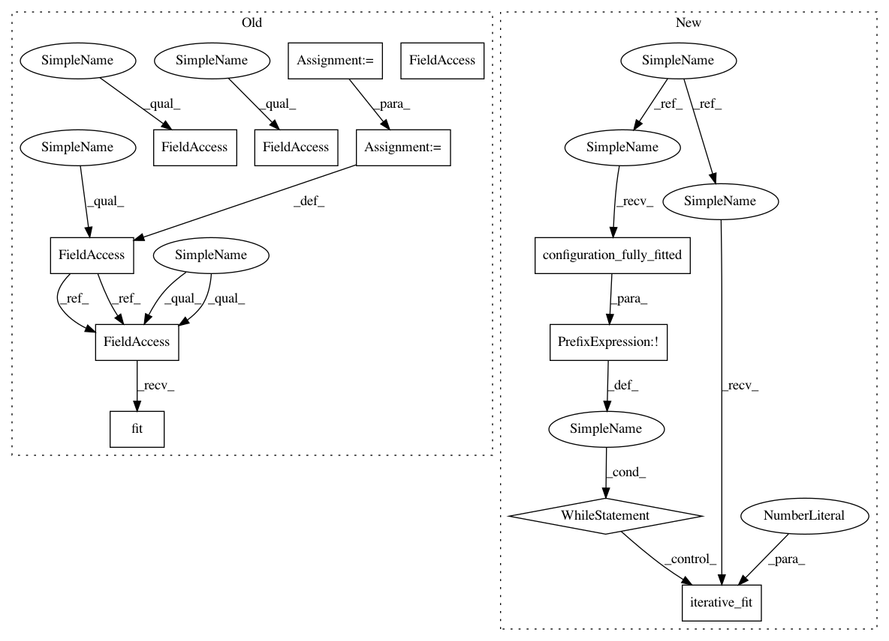

9260d6d1b6189335cca81903361befd32b4f739a,ParamSklearn/components/classification/sgd.py,SGD,fit,#SGD#Any#Any#,32
Before Change
def fit(self, X, Y):
// TODO: maybe scale training data that its norm becomes 1?
// http://scikit-learn.org/stable/modules/sgd.html//id1
self.alpha = float(self.alpha)
self.fit_intercept = bool(self.fit_intercept)
self.n_iter = int(self.n_iter)
if self.class_weight == "None":
self.class_weight = None
self.l1_ratio = float(self.l1_ratio)
self.epsilon = float(self.epsilon)
self.eta0 = float(self.eta0)
self.power_t = float(self.power_t)
self.estimator = SGDClassifier(loss=self.loss,
penalty=self.penalty,
alpha=self.alpha,
fit_intercept=self.fit_intercept,
n_iter=self.n_iter,
learning_rate=self.learning_rate,
class_weight=self.class_weight,
l1_ratio=self.l1_ratio,
epsilon=self.epsilon,
eta0=self.eta0,
power_t=self.power_t,
shuffle=True,
random_state=self.random_state)
self.estimator.fit(X, Y)
return self
def predict(self, X):
if self.estimator is None:
After Change
self.random_state = random_state
self.estimator = None
def fit(self, X, y):
while not self.configuration_fully_fitted():
self.iterative_fit(X, y, n_iter=1)
return self
def iterative_fit(self, X, y, n_iter=1, refit=False):
if refit:
In pattern: SUPERPATTERN
Frequency: 3
Non-data size: 12
Instances
Project Name: automl/auto-sklearn
Commit Name: 9260d6d1b6189335cca81903361befd32b4f739a
Time: 2015-10-01
Author: feurerm@informatik.uni-freiburg.de
File Name: ParamSklearn/components/classification/sgd.py
Class Name: SGD
Method Name: fit
Project Name: automl/auto-sklearn
Commit Name: 9260d6d1b6189335cca81903361befd32b4f739a
Time: 2015-10-01
Author: feurerm@informatik.uni-freiburg.de
File Name: ParamSklearn/components/classification/sgd.py
Class Name: SGD
Method Name: fit
Project Name: automl/auto-sklearn
Commit Name: 9260d6d1b6189335cca81903361befd32b4f739a
Time: 2015-10-01
Author: feurerm@informatik.uni-freiburg.de
File Name: ParamSklearn/components/classification/multinomial_nb.py
Class Name: MultinomialNB
Method Name: fit
Project Name: automl/auto-sklearn
Commit Name: 9260d6d1b6189335cca81903361befd32b4f739a
Time: 2015-10-01
Author: feurerm@informatik.uni-freiburg.de
File Name: ParamSklearn/components/classification/bernoulli_nb.py
Class Name: BernoulliNB
Method Name: fit